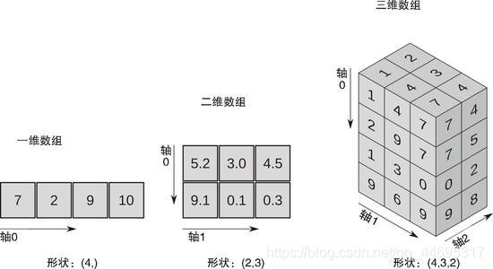
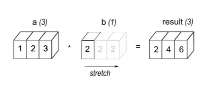
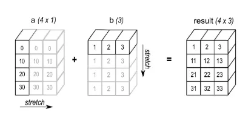

基本概念
图解



数组（ndarray）
-
一维数组【列表】
类似列表，但数组切片针对原始数据
-
二维数组（矩阵）【关于一维数组的列表】
以数组为元素的数组，包括行和列，类似表格
-
三维数组（矩阵列表）【关于二维数组的列表】 最常见的多维数组。指维数为3的数组结构，可用来描述三维空间中的位置或状态
-
结构化数组 用于处理异质数据的重要工具，通过定义复杂的数据类型，可以创建具有不同字段的数组，类似于表格或数据库中的行。结构化数组提供了访问、修改、排序和条件筛选数据的灵活性，同时也方便与 Pandas DataFrame 进行交互
轴（axis）
指定数组的某个轴可以沿该轴做相关操作（具体如上图） 对于一维数组，由于无法从上至下操作，因此其只有水平轴，即其轴0为水平轴（具体如上图）
广播机制（broadcast）


基础创建
array函数
array（object, dtype=None, copy=True, ndmin=0, order="K", subok=False, like=None）
-
object: 任何具有数组接口方法的对象（数组、列表、元组等，主要是列表和数组）
-
dtype: 数据类型。可以通过设置不同字段和数据类型以创建结构化数组
dtype
bool_(bool8、"?")【8位布尔类型】 number integer signedinteger【有符号整数】 int64（intp、int0、longlong、"l"）【64位（-9223372036854775808~9223372036854775807）】 int32(int_、intc、"i")【32位】 int16(short、"h")【16位（-32768~32767）】 int8(byte、"b")【8位（-128~127）】 timedelta64【两个时间之间的间隔】 unsignedinteger【无符号整数】 uint64(uintp、uint0、ulonglong)【64位（0~18446744073709551615）】 uint32(uint、uintc)【32位（0~4294967295）】 uint16(ushort)【16位（0~65535）】 uint8(ubyte)【8位（0~255）】 inexact complexfloating longcomplex(clongfloat、clongdouble)【两个128位浮点数】 complex_(complex128、cfloat、cdouble)【两个64位浮点数】 singlecomplex(csingle、complex64)【两个32位浮点数】 floating longfloat(longdouble、"g")【128位浮点数】 float64(float_、double、"d")【双精度浮点：1个符号位，11位指数，52位尾数】 float32(single、"f")【单精度浮点：1个符号位，8位指数，23位尾数】 float16(half)【半精度浮点：1个符号位，5位指数，10位尾数】 flexible character string_(bytes_、bytes0) unicode_(str_、str0) void0(void) datetime64【日期时间类型】 object_(object0、"O")【任何python对象】 -
copy: 是否复制原数组。默认为True
-
ndmin: 指定最小维度
-
subok: 是否从子类创建数组。默认为False，即强制创建基类数组
-
order: 元素在内存中的存储顺序，值为"K"、"A"、"C"、"F" 若object参数为非数组，其值可为"K"、"C"、"F" 若object参数为数组，其值均可取 "K": 元素在内存中出现的顺序 "A": 原顺序 "C": 按行 "F": 按列
-
like: 默认为None
# 简单创建
n0 = np.array([1, 2, 3, 4]) # 一维数组
"""
[1 2 3 4]
"""
n1 = np.array([[1, 2], [3, 4]]) # 二维数组
"""
[[1 2]
[3 4]]
"""
n2 = np.array([[[1, 2, 3, 4], [5, 6, 7, 8]], [["a", "b", "c", "d"], ["e", "f", "g", "h"]]]) # 三维数组
"""
[[['1' '2' '3' '4']
['5' '6' '7' '8']]
[['a' 'b' 'c' 'd']
['e' 'f' 'g' 'h']]]
"""
# 设置dtype
n3 = np.array([1, 2, 3, 4], dtype=np.float_)
print(n3, n3.dtype, type(n3[0]))
"""
[1. 2. 3. 4.] float64 <class 'numpy.float64'>
"""
n4 = np.array([1, 2, 3, 4], dtype=np.intp)
print(n4, n4.dtype, type(n4[0]))
"""
[1 2 3 4] int64 <class 'numpy.int64'>
"""
n5 = np.array([1, 2, 3, 4], dtype=np.complex_)
print(n5, n5.dtype, type(n5[0]))
"""
[1.+0.j 2.+0.j 3.+0.j 4.+0.j] complex128 <class 'numpy.complex128'>
"""
# 设置copy
n0 = np.array([1, 2, 3, 4])
n6 = np.array(n0, copy=True) # 复制原数组，与原数组独立
n6[0] = 0
n0[1] = 20
print(n6, n0)
"""
[0 2 3 4] [ 1 20 3 4]
"""
n0 = np.array([1, 2, 3, 4])
n7 = np.array(n0, copy=False) # 不复制原数组，与原数组关联
n7[0] = 0
n0[1] = 20
print(n7, n0)
"""
[ 0 20 3 4] [ 0 20 3 4]
"""
# 设置ndmin
n8 = np.array([[1, 2], [3, 4]], ndmin=2) # 二维
"""
[[1 2]
[3 4]]
"""
n9 = np.array([[1, 2], [3, 4]], ndmin=3) # 三维
"""
[[[1 2]
[3 4]]]
"""
# 结构化数组的创建
dtype = np.dtype([('name', 'S10'), ('age', int), ('height', float)])
data = np.array([('Alice', 25, 5.6), ('Bob', 30, 6.0)], dtype=dtype)
"""
[(b'Alice', 25, 5.6) (b'Bob', 30, 6. )]
"""
dtype_nested = np.dtype([('info', [('name', 'S10'), ('age', int)]), ('height', float)])
data_nested = np.array([(('Alice', 25), 5.6), (('Bob', 30), 6.0)], dtype=dtype_nested)
"""
[((b'Alice', 25), 5.6) ((b'Bob', 30), 6. )]
"""
填充创建
empty函数
创建指定形状，未初始化的数组，元素为随机值
empty(shape, dtype=numpy.float64, order="C", like=None)
-
shape: 创建的数组的形状。可以是整数或整数序列
-
dtype: 同上。默认为numpy.float64
-
order: 同上。"C"和"F"可选，默认"C"
-
like: 默认为None
n10 = np.empty(5)
"""
[0. 0.25 0.5 0.75 1. ]
"""
n11 = np.empty([4, 3])
"""
[[0. 0. 1.]
[1. 1. 1.]
[1. 1. 1.]
[0. 0. 1.]]
"""
zeros函数
创建指定形状，以0填充的数组
zeros(shape, dtype=numpy.float64, order="C", like=None)
-
shape: 同上
-
dtype: 同上
-
order: 同上
-
like: 默认为None
n12 = np.zeros(5)
"""
[0. 0. 0. 0. 0.]
"""
n13 = np.zeros([4, 3])
"""
[[0. 0. 0.]
[0. 0. 0.]
[0. 0. 0.]
[0. 0. 0.]]
"""
ones函数
创建指定形状，以1填充的数组
ones(shape, dtype=numpy.float64, order="C", like=None)
-
shape: 同上
-
dtype: 同上
-
order: 同上
-
like: 默认为None
n14 = np.ones(5)
"""
[1. 1. 1. 1. 1.]
"""
n15 = np.ones([4, 3])
"""
[[1. 1. 1.]
[1. 1. 1.]
[1. 1. 1.]
[1. 1. 1.]]
"""
full函数
创建指定形状，以fill_value填充的数组
full(shape, fill_value, dtype=None, order="C", like=None)
-
shape: 同上
-
fill_value: 指定填充值。可以是单一数值或数组等
-
dtype: 同上。默认为None，即与填充值类型一致
-
order: 同上
-
like: 默认为None
n16 = np.full(5, fill_value=8)
"""
[8 8 8 8 8]
"""
n17 = np.full([4, 3], fill_value=8)
"""
[[8 8 8]
[8 8 8]
[8 8 8]
[8 8 8]]
"""
n18 = np.full([6, 4], fill_value=[1, 2, 3, 4])
"""
[[1 2 3 4]
[1 2 3 4]
[1 2 3 4]
[1 2 3 4]
[1 2 3 4]
[1 2 3 4]]
"""
n18 = np.full([6, 4], fill_value=[[1], [2], [3], [4], [5], [6]])
"""
[[1 1 1 1]
[2 2 2 2]
[3 3 3 3]
[4 4 4 4]
[5 5 5 5]
[6 6 6 6]]
"""
范围创建
arange函数
类似于range函数，范围为[start，stop)，区别是该函数返回数组以及该函数参数可以为任意实数。建议该函数参数仅使用整数类型
arange(start=0, stop, step=1, dtype=None, like=None)
-
start: 起始值。可以是整数或实数。默认为0
-
stop: 终止值。可以是整数或实数
-
step: 步长或间隔。可以是整数或实数。默认为1
-
dtype: 同上。默认为None，自动判断数据类型
-
like: 默认为None
n19 = np.arange(10)
"""
[0 1 2 3 4 5 6 7 8 9]
"""
n20 = np.arange(1, 10)
"""
[1 2 3 4 5 6 7 8 9]
"""
n21 = np.arange(1, 10, 2)
"""
[1 3 5 7 9]
"""
linspace函数
用于创建等差数列数组（在start和stop之间产生num个均匀等差数）
当包含stop（默认）时，步长为（stop-start）/（num-1）；当不包含stop时，步长为（stop-start）/num
linspace(start, stop, num=50, endpoint=True, retstep=False, dtype=None, axis=0)
-
start: 起始值。可以是任一实数或列表、数组等
-
stop: 终止值。可以是任一实数或列表、数组等
-
num: 产生样本的数量。默认为50
-
endpoint: 是否包含stop参数值。默认为True
-
retstep: 是否以元组的形式返回显示步长（等差）。默认为False
-
axis: 仅当start或stop为列表或数组等类型时有效。表示沿着该轴为等差数列。默认为0
-
dtype: 同上
# 简单创建
n22 = np.linspace(1, 10, 5)
"""
[ 1. 3.25 5.5 7.75 10. ]
"""
n23 = np.linspace(1, [11, 12, 13, 14], 5)
"""
[[ 1. 1. 1. 1. ]
[ 3.5 3.75 4. 4.25]
[ 6. 6.5 7. 7.5 ]
[ 8.5 9.25 10. 10.75]
[11. 12. 13. 14. ]]
"""
n24 = np.linspace([1, 2, 3, 4], 11, 5)
"""
[[ 1. 2. 3. 4. ]
[ 3.5 4.25 5. 5.75]
[ 6. 6.5 7. 7.5 ]
[ 8.5 8.75 9. 9.25]
[11. 11. 11. 11. ]]
"""
n25 = np.linspace([1, 2, 3, 4], [11, 12, 13, 14], 5)
"""
[[ 1. 2. 3. 4. ]
[ 3.5 4.5 5.5 6.5]
[ 6. 7. 8. 9. ]
[ 8.5 9.5 10.5 11.5]
[11. 12. 13. 14. ]]
"""
# 设置endpoint
n26 = np.linspace(1, 10, 5, endpoint=False)
"""
[1. 2.8 4.6 6.4 8.2]
"""
# 设置retstep
n27 = np.linspace(1, 10, 5, retstep=True)
"""
(array([ 1. , 3.25, 5.5 , 7.75, 10. ]), 2.25)
"""
# 设置axis
n28 = np.linspace([1, 2, 3, 4], [11, 12, 13, 14], 6, axis=0)
"""
[[ 1. 2. 3. 4.]
[ 3. 4. 5. 6.]
[ 5. 6. 7. 8.]
[ 7. 8. 9. 10.]
[ 9. 10. 11. 12.]
[11. 12. 13. 14.]]
"""
n29 = np.linspace([1, 2, 3, 4], [11, 12, 13, 14], 6, axis=1)
"""
[[ 1. 3. 5. 7. 9. 11.]
[ 2. 4. 6. 8. 10. 12.]
[ 3. 5. 7. 9. 11. 13.]
[ 4. 6. 8. 10. 12. 14.]]
"""
logspace函数
用于创建等比数列（在basestart和basestop之间产生num个均匀等比数）
等比数列在对数上为等差数列，所以换种思路可理解为：在start和stop之间生成num个均匀等差数列（同linspace函数），再将每个数以base为底作指数运算
logspace(start, stop, num=50, endpoint=True, base=10.0, dtype=None, axis=0)
-
start: 同上。但初始值为base**start
-
stop: 同上。但终止值为base**stop
-
num: 同上
-
endpoint: 同上
-
base: 底数，可以为任一实数或列表、数组等。默认为10.0
-
axis: 仅当start、stop或base为列表或数组等类型时有效。表示沿着该轴为等比数列。默认为0
-
dtype: 同上
n30 = np.logspace(1, 10, 10, base=2)
"""
[ 2. 4. 8. 16. 32. 64. 128. 256. 512. 1024.]
"""
n31 = np.logspace(1, 4, 5, base=[2, 3, 4, 5])
"""
[[ 2. 3. 4. 5. ]
[ 3.36358566 6.83852117 11.3137085 16.71850762]
[ 5.65685425 15.58845727 32. 55.90169944]
[ 9.51365692 35.53399835 90.50966799 186.91859765]
[ 16. 81. 256. 625. ]]
"""
随机创建
random.rand函数
创建一个给定形状的数组，并用[0，1)上均匀分布的随机样本填充。若未给定参数，将仅返回一个随机数
rand(d0, d1, ..., dn)
n32 = np.random.rand()
"""
0.9470660042118693
"""
n33 = np.random.rand(3)
"""
[0.88734261 0.88303211 0.76045189]
"""
n34 = np.random.rand(3, 4)
"""
[[0.38775125 0.56929663 0.82186919 0.3899654 ]
[0.31936881 0.02693 0.75568994 0.286433 ]
[0.42836783 0.36534623 0.93650673 0.69723928]]
"""
random.randn函数
创建一个给定形状的数组，从“标准正态”分布（均值为0，标准差为1）随机返回一个或多个样本 服从均值为μ，标准差为σ的正态分布，可用：μ + σ * np.random.randn(...) 来生成数组
randn(d0, d1, ..., dn)
n35 = np.random.randn()
"""
-0.9634996081712404
"""
n36 = np.random.randn(3)
"""
[0.5043878 0.86713589 0.27525007]
"""
n37 = np.random.randn(3, 4)
"""
[[-0.1079871 -0.42197777 0.52599791 0.17754496]
[ 0.47036527 -0.90796359 -0.22122957 -0.50120022]
[-0.47200183 0.59749017 1.08836655 0.67734795]]
"""
random.randint函数
创建一个给定形状的数组，用[low, high）的随机整数样本填充；若high未指定，范围为[0, low)的随机整数
randint(low, high=None, size=None, dtype=int)
-
low: 起始值。可为整数或列表、数组等
-
high: 终止值。可为整数或列表、数组等
-
size: 指定数组形状大小。若不指定，则根据参数类型决定返回类型
-
dtype: 同上。默认为int
# high未指定，范围为[0, low)
n38 = np.random.randint(2, size=10)
"""
[1 0 1 0 0 0 1 1 1 0]
"""
# 指定high，范围为[low, high)
n39 = np.random.randint(1, 10, size=10)
"""
[7 1 6 7 6 7 5 9 1 6]
"""
# 未指定size，根据参数类型决定size
n40 = np.random.randint(1, 10)
"""
8
"""
n41 = np.random.randint(1, [10, 11, 12, 13]) # 范围分别为[1, 10)、[1, 11)、[1, 12)、[1, 13)
"""
[ 8 10 11 4]
"""
n42 = np.random.randint([1, 3, 5, 7], [[10], [20]])
"""
[[1 5 9 8]
[2 8 8 7]]
"""
# 指定size
n43 = np.random.randint(1, 10, size=[3, 4])
"""
[[4 1 7 9]
[8 2 1 4]
[4 2 4 7]]
"""
random.normal函数
创建一个给定形状的数组，从正态分布（均值为loc，标准差为scale）随机返回一个或多个样本
normal(loc=0.0, scale=1.0, size=None)
-
loc: 均值。可为浮点数或列表、数组等。默认为0.0
-
scale: 标准差。可为浮点数或列表、数组等,。默认为1.0
-
size: 同上
n44 = np.random.normal(loc=2, scale=2)
"""
1.8403874883934772
"""
n45 = np.random.normal(loc=2, scale=2, size=[3, 4])
"""
[[ 1.89492021 1.82202719 2.46348908 -1.21728651]
[-3.10725159 3.67963494 8.82440607 -1.18438998]
[ 4.22737934 1.88183014 1.90411906 0.04398211]]
"""
其它创建
asarray函数
类似array函数，但默认不复制原数据；若设置了dtype，仅当所设置dtype与原数据不匹配时复制原数据
asarray(a, dtype=None, order='K', like=None)
-
a: 任何能转换为数组的对象
-
dtype: 同上
-
order: 同上
-
like: 同上
n0 = np.array([1, 2, 3, 4])
n46 = np.asarray(n0)
n0[0] = 10
n46[1] = 20
print(n46, n0)
"""
[10 20 3 4] [10 20 3 4]
"""
n0 = np.array([1, 2, 3, 4])
n47 = np.asarray(n0, dtype=np.float_)
n0[0] = 10
n47[1] = 20
print(n47, n0)
"""
[ 1. 20. 3. 4.] [10 2 3 4]
"""
frombuffer函数
frombuffer(buffer, count=-1, offset=0, dtype=None, like=None)
-
buffer: 具有buffer接口的对象
-
count: 读取的数量。默认为-1，表示读取全部数据
-
offset: 偏移量。从此开始读取缓冲区(以字节为单位)。默认为0
-
dtype: 同上。默认为float
-
like: 同上
s = b'hello world'
n48 = np.frombuffer(s, count=3, offset=2, dtype="S1")
"""
[b'l' b'l' b'o']
"""
fromiter函数
从可迭代对象创建数组
fromiter(iter, dtype, count=-1, like=None)
-
iter: 可迭代对象，如列表、元组等
-
dtype: 同上
-
count: 同上
-
like: 同上
n49 = np.fromiter([i for i in range(0, 10)], dtype=np.float_, count=6)
"""
[0. 1. 2. 3. 4. 5.]
"""
like创建
该类创建函数类似于前述填充创建的函数，区别在于该类函数的形状由给定数组决定
empty_like函数
创建一个与给定数组的维度和数据类型相同的未初始化的数组
empty_like(prototype, dtype=None, order='K', subok=True, shape=None)
-
prototype: 给定的数组
-
dtype: 覆盖结果的数据类型。同上
-
order: 覆盖结果的内存排列，默认为"K"。同上
-
subok: 同上。默认为True
-
shape: 覆盖结果的形状。同上
n50 = np.empty_like([[1, 2, 3, 4], [5, 6, 7, 8]])
"""
[[ 0 1072693248 0 1077149696]
[ 0 1074266112 0 1074790400]]
"""
zeros_like函数
创建一个与给定数组的维度和数据类型相同的以0填充的数组
zeros_like(a, dtype=None, order='K', subok=True, shape=None)
-
a: 给定的数组
-
dtype: 同上
-
order: 同上
-
subok: 同上
-
shape: 同上
n51 = np.zeros_like([[1, 2, 3, 4], [5, 6, 7, 8]])
"""
[[0 0 0 0]
[0 0 0 0]]
"""
ones_like函数
创建一个与给定数组的维度和数据类型相同的以1填充的数组
ones_like(a, dtype=None, order='K', subok=True, shape=None)
-
a: 给定的数组
-
dtype: 同上
-
order: 同上
-
subok: 同上
-
shape: 同上
n52 = np.ones_like([[1, 2, 3, 4], [5, 6, 7, 8]])
"""
[[1 1 1 1]
[1 1 1 1]]
"""
full_like函数
创建一个与给定数组的维度和数据类型相同的以fill_value填充的数组
full_like(a, fill_value, dtype=None, order='K', subok=True, shape=None)
-
a: 给定的数组
-
fill_value: 指定填充值。同上
-
dtype: 同上
-
order: 同上
-
subok: 同上
-
shape: 同上
n53 = np.full_like([[1, 2, 3, 4], [5, 6, 7, 8]], fill_value=10)
"""
[[10 10 10 10]
[10 10 10 10]]
"""
对角创建
对于二维及以上数组才有对角线，一般只提二维数组
对于二维数组，其对角线是指a[i, i+offset或k]，offset或k是偏移量，当offset或k=0时，该对角线为主对角线，即a[i, i]，该对角线包含的元素包括a[0, 0], a[1, 1], ..., a[i, i]。
对于多维数组，其主对角线为a[i, i, ..., i]
eye函数
创建一个对角线(i, i+k)为1，其它位置为0的二维数组
eye(N, M=N, k=0, dtype=float, order='C', like=None)
-
N: 行数
-
M: 列数。默认与N相等
-
k: 相对于主对角线的偏移量或者对角线索引。默认为0，即主对角线；+表示上方对角线，-表示下方对角线
-
dtype: 同上。默认为float
-
order: 同上。默认为"C"
-
like: 同上
n54 = np.eye(5)
"""
[[1. 0. 0. 0. 0.]
[0. 1. 0. 0. 0.]
[0. 0. 1. 0. 0.]
[0. 0. 0. 1. 0.]
[0. 0. 0. 0. 1.]]
"""
n55 = np.eye(5, 7)
"""
[[1. 0. 0. 0. 0. 0. 0.]
[0. 1. 0. 0. 0. 0. 0.]
[0. 0. 1. 0. 0. 0. 0.]
[0. 0. 0. 1. 0. 0. 0.]
[0. 0. 0. 0. 1. 0. 0.]]
"""
n56 = np.eye(5, 7, k=1)
"""
[[0. 1. 0. 0. 0. 0. 0.]
[0. 0. 1. 0. 0. 0. 0.]
[0. 0. 0. 1. 0. 0. 0.]
[0. 0. 0. 0. 1. 0. 0.]
[0. 0. 0. 0. 0. 1. 0.]]
"""
n57 = np.eye(5, 7, k=-1)
"""
[[0. 0. 0. 0. 0. 0. 0.]
[1. 0. 0. 0. 0. 0. 0.]
[0. 1. 0. 0. 0. 0. 0.]
[0. 0. 1. 0. 0. 0. 0.]
[0. 0. 0. 1. 0. 0. 0.]]
"""
diag函数
提取一个二维数组的对角或者创建一个对角二维数组(对角为该一维数组)
diag(v, k=0)
-
v: 指定数组，只能是一维数组或二维数组
-
k: 同上
n0 = np.random.randint(1, 10, size=(5, 7))
"""
[[3 2 6 9 2 4 8]
[7 4 1 4 7 4 2]
[4 3 5 1 6 8 9]
[2 6 9 2 2 3 7]
[1 5 7 4 3 5 6]]
"""
n58 = np.diag(n0)
"""
[3 4 5 2 3]
"""
n1 = np.array([1, 2, 3, 4])
n59 = np.diag(n1)
"""
[[1 0 0 0]
[0 2 0 0]
[0 0 3 0]
[0 0 0 4]]
"""
diagflat函数
将数组转化为一维数组后，创建一个对角二维数组（对角为该转化后的一维数组）
diagflat(v, k=0)
-
v: 指定数组
-
k: 同上
n0 = np.array([1, 2, 3, 4])
n60 = np.diagflat(n0)
"""
[[1 0 0 0]
[0 2 0 0]
[0 0 3 0]
[0 0 0 4]]
"""
n1 = np.array([[1, 2, 3, 4], [5, 6, 7, 8]])
n61 = np.diagflat(n1)
"""
[[1 0 0 0 0 0 0 0]
[0 2 0 0 0 0 0 0]
[0 0 3 0 0 0 0 0]
[0 0 0 4 0 0 0 0]
[0 0 0 0 5 0 0 0]
[0 0 0 0 0 6 0 0]
[0 0 0 0 0 0 7 0]
[0 0 0 0 0 0 0 8]]
"""
对角三角创建
tri函数
创建一个对角线(i, i+k)及以下部分为1，其它位置为0的二维数组
tri(N, M=N, k=0, dtype=float, like=None)
-
N: 行数
-
M: 列数。默认与N相等
-
k: 同上
-
dtype: 同上。默认为float
-
like: 同上
n62 = np.tri(5)
"""
[[1. 0. 0. 0. 0.]
[1. 1. 0. 0. 0.]
[1. 1. 1. 0. 0.]
[1. 1. 1. 1. 0.]
[1. 1. 1. 1. 1.]]
"""
n63 = np.tri(5, 7)
"""
[[1. 0. 0. 0. 0. 0. 0.]
[1. 1. 0. 0. 0. 0. 0.]
[1. 1. 1. 0. 0. 0. 0.]
[1. 1. 1. 1. 0. 0. 0.]
[1. 1. 1. 1. 1. 0. 0.]]
"""
n64 = np.tri(5, 7, k=1)
"""
[[1. 1. 0. 0. 0. 0. 0.]
[1. 1. 1. 0. 0. 0. 0.]
[1. 1. 1. 1. 0. 0. 0.]
[1. 1. 1. 1. 1. 0. 0.]
[1. 1. 1. 1. 1. 1. 0.]]
"""
n65 = np.tri(5, 7, k=-1)
"""
[[0. 0. 0. 0. 0. 0. 0.]
[1. 0. 0. 0. 0. 0. 0.]
[1. 1. 0. 0. 0. 0. 0.]
[1. 1. 1. 0. 0. 0. 0.]
[1. 1. 1. 1. 0. 0. 0.]]
"""